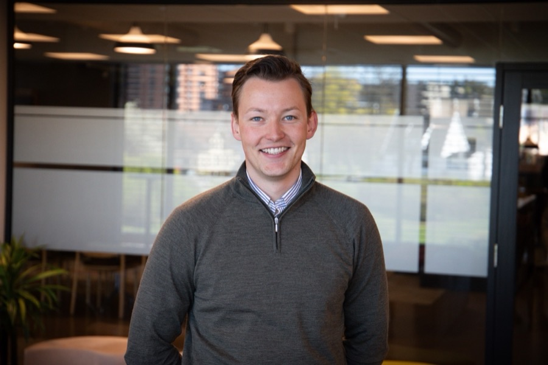

Enkeldrift
Sensorer, et dashboard som fungerer godt på mobil, og varsler på e-post og SMS når noe avviker. 25 anlegg er i drift, blant annet i helsesektoren. Jeg er medeier og står for både arkitektur, kode og kundekontakt.
Hei, jeg er
Jeg bygger programvare og leder utviklingsteam. Til daglig er jeg konsulent i Itera, og jeg bor i Fredrikstad.
Se prosjekter Ta kontakt
Jeg startet med informatikk i Oslo, men har lært mest av å sitte tett på folkene som faktisk skal bruke det jeg bygger. Jeg liker å forstå problemet først, og så finne den enkleste løsningen som holder.
De siste årene har jeg vært tech lead på prosjekter der vi startet med blankt ark. Jeg liker å eie arkitekturen, snakke med de som bestiller og gi utviklerne ro til å bygge. Jeg skriver fortsatt mye kode selv.
Ved siden av jobb er jeg medeier i Enkeldrift, der vi lager overvåkning av tekniske anlegg. Jeg har en bachelor fra Universitetet i Oslo, og AZ-900 og ISTQB på CV-en.
Jeg bor i Fredrikstad sammen med hunden min, og jeg liker å være aktiv. Jeg har en kjærlighet for vannet, og er frivillig i Redningsselskapet, der jeg er matros.
Sensorer, et dashboard som fungerer godt på mobil, og varsler på e-post og SMS når noe avviker. 25 anlegg er i drift, blant annet i helsesektoren. Jeg er medeier og står for både arkitektur, kode og kundekontakt.
Startet som et studentprosjekt på UiO og endte som et system i operativ drift. Et kart som viser hvor noe i sjøen kan drive, bygget på simuleringsdata.
Jeg ledet tre utviklere fra start til produksjon på åtte måneder. Systemet tar i dag over 60 000 saker i året, med sensitive helsedata, live-oppdatering mellom faner og brukere, og oppslag mot folkeregistre i fire land.
Som tech lead la jeg arkitekturen som lar oss legge til nye moduler uten å gjøre alt om igjen. Fire apper for fire land, laget av fem utviklere på under ett år. Teamet bruker AI-verktøy som en vanlig del av jobben.